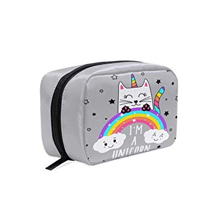

Estuches
Tamaños y Formas
Alargado
Ideal para guardar muchas cosas y muy largas, son estuches de gran capacidad, muy ligeros y resistentes.
Fabricado con materiales de alta calidad como el terciopelo albanés que es especiamente escogido por las espertas
diseñadoras, Lesliey Sofía, para su disfrute.
En varios colores y texturas.

Cuadrado
Ideal para guardar cosas de papelería,en concreto grapadoras,pero también se
pueden guardar móviles, saca puntas con
depósito, lápices, bolis, tigeras, compases, etc.
Con diferentes estampados .
Redondeado
Es un estuche elegante, fabricado con las telas más resitentes y rígidas.
Es resistente a cualquier caída y cualquier líquido,preparado para niños destructores y reboltosos
En varios colores y tamaños
Unicornio
Un estuche divertido, que sirve también como muñeco y que a los peques les encanta.
Es blanco con detalles rosas con colores alegres y llamtivos,podrás ser la mas guay de tu clase,
hay diferentes moldelos.
De los mas vendidos
Panda
Un estuche divertido, que sirve tambien como muñeco y que a los ás peques les encanta.
Estuche muy suave, blanco y negro, muy kawaii, viene con diferentes accesorios con la temática asiática de pandas.
de los mas vendidos
Recomendaciones del mes
Te recomendamos la forma y tamaño mas vendido
El estuche de unicorni ahora son tendencia
Estuches de purpurina, la moda es brillante
El color negro, un color elegente y discreto para todas las ocasiones